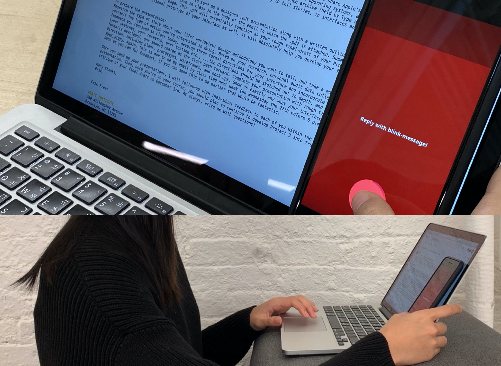
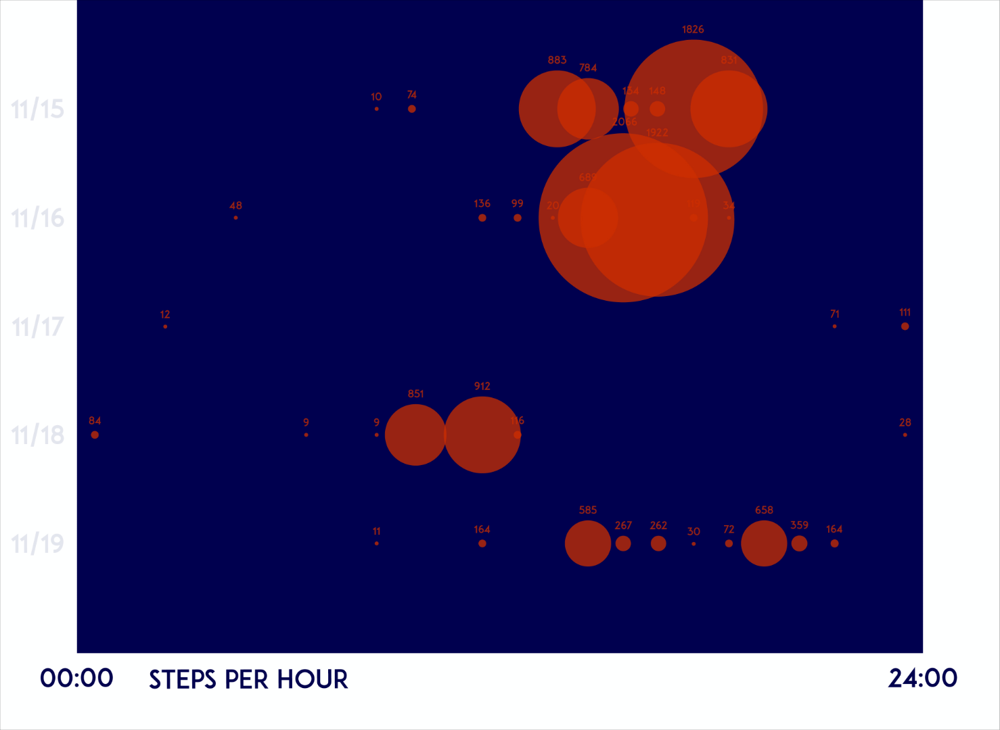
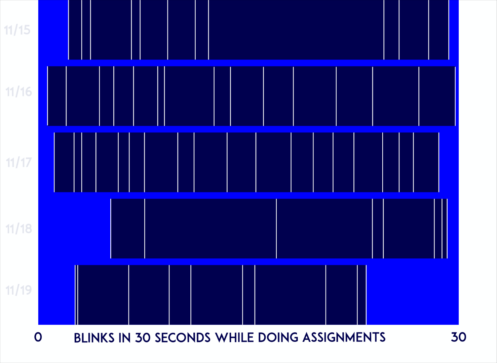
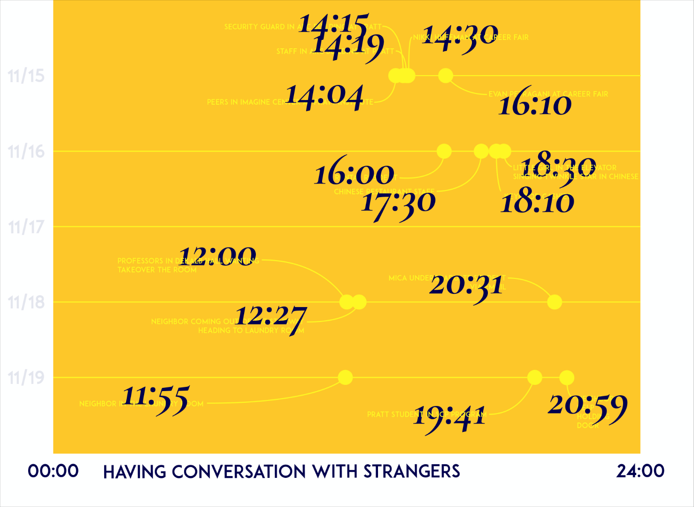
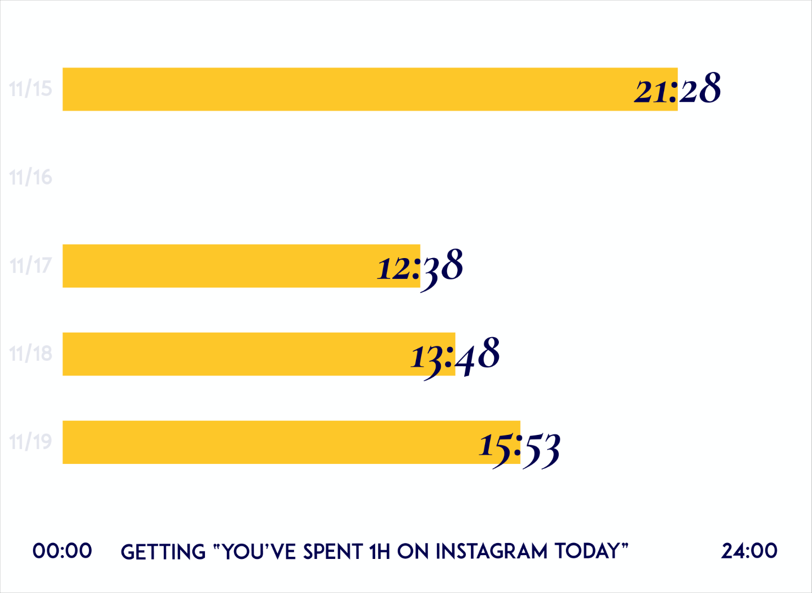
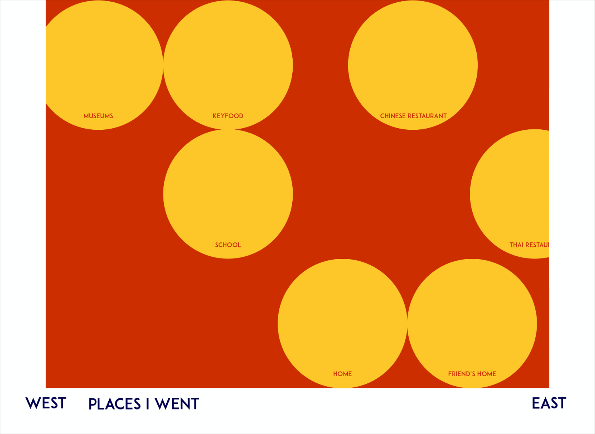
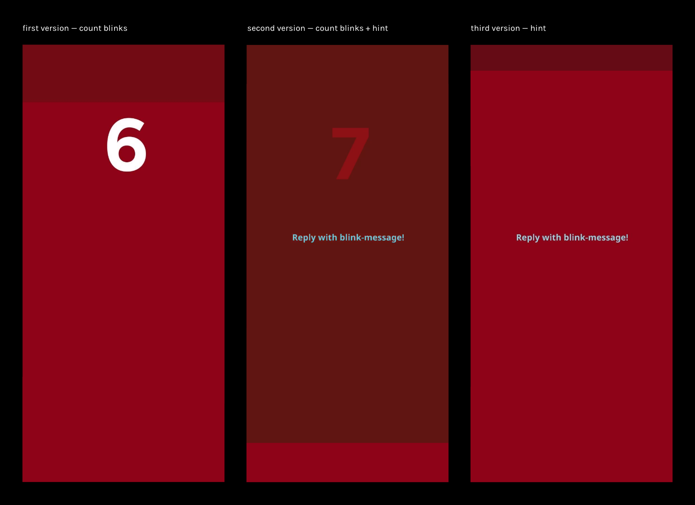
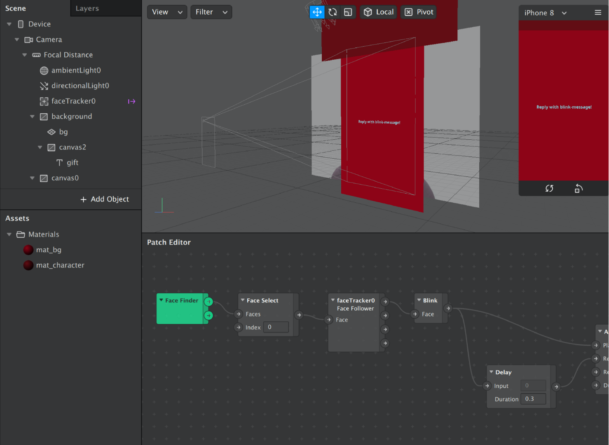

Amber Hsuan Lin

Reply with Blink-Message
Eyelids
Wonder why not we reply emails with the frequency of blinks? According to science studies, people blinking more have higher chance of being flexible thinkers, which leads to the fact that how frequently the receiver blinks and where the receiver blinks might convey thoughts. This project is an experimental design; the project begins with auditing five collections in my daily life.
2019
Experimental Design
Information Design
Software: SparkAR







